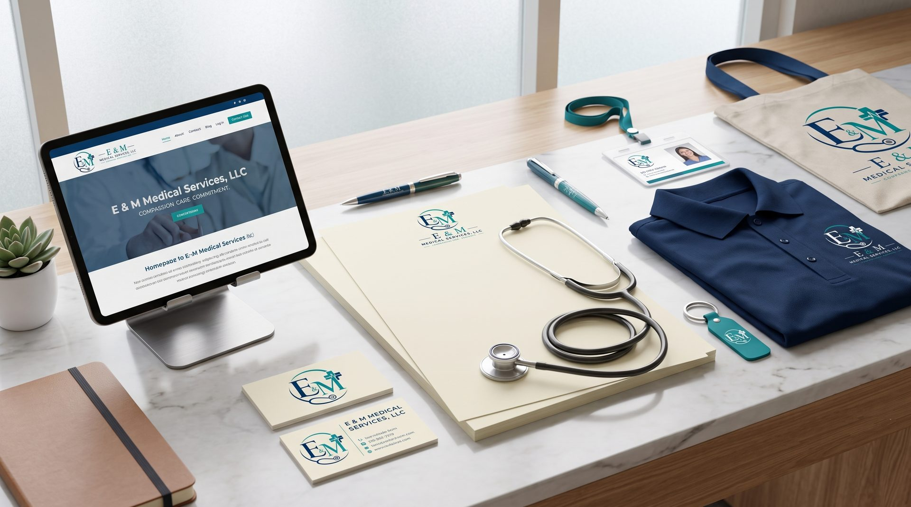

Twenty years of caring for our neighbors.
E & M Medical Services was founded on a simple idea: that great medicine begins with a great relationship. Two decades on, that's still the foundation of everything we do.
Florida & Beyond
Our story began with one belief.
When E & M Medical Services opened its doors in 2005, healthcare was already becoming faster, more transactional, and less personal. We opened with the opposite goal in mind — to be a practice where patients weren't rushed, where questions were welcomed, and where the doctor-patient relationship was treated as the essential foundation of good medicine.
Over the past two decades, we've cared for families through births and losses, chronic illnesses and full recoveries, first checkups and long-term care. What has remained constant is our approach: listen carefully, evaluate thoroughly, and treat each person as an individual — not a case number.
We're proud to serve Starke and the surrounding communities, and we don't take the trust our patients place in us lightly.
Mission & Vision
Our Mission
To provide compassionate, high-quality, and accessible healthcare services that improve the health and well-being of individuals and families through excellence, integrity, and patient-centered care.
Our Vision
To be a trusted healthcare provider recognized for clinical excellence, compassionate service, and commitment to improving the health of our community.
Six principles, one practice
These values aren't posters on a wall — they're the standards we hold ourselves to with every patient, every day.
Compassion
Integrity
Excellence
Respect
Patient-Centered Care
Professionalism
Compassion
Every patient is met with warmth, patience, and a willingness to listen.
Care
Evidence-based medicine delivered with the attention your health deserves.
Commitment
A long-term partnership in your wellness — through every stage of life.
Become part of our community.
We'd love to meet you. Reach out to schedule your first visit or to learn more about how we practice.
Contact Us